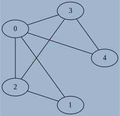

Modélisation de graphes en Python
Interface d'un graphe
Il existe de nombreuses manières d'implémenter un graphe, mais dans de nombreux cas l'interface recherchée est assez simple à concevoir. A ce titre l'utilisation d'une classe semble être judicieuse. Afin de définir l'interface choisie nous devons d'abord considérér les spécifications minimales de la création d'un graphe, orienté ou non, et éventuellement pondéré :
- Obtenir un graphe vide par une méthode constructeur
- Etre capable d'ajouter un noeud/sommet à un graphe existant.
- Etre capable d'ajouter des arêtes/arcs à un graphe existant, avec une éventuelle pondération.
- Obtenir la liste des voisins d'un sommet.
Une fois ces opérations élémentaires implémentées, nous pourrons rajouter des possibilités supplémentaires, comme par exemple
- obtenir l'ordre du graphe, sa taille ;
- obtenir donc le degré d'un sommet ;
- savoir si il existe un parcours eulérien ou un cycle eulérien dans ce graphe ;
- parcourir ce graphe en partant d'un sommet donné ;
- repérer les éventuels cycles du graphe ;
- appliquer un algorithme spécifique, comem celui de Dijkstra par exemple.
Pour commencer, nous allons donc définir une classe Graph, dont l'interface minimale sera la suivante (des ajustements seront possibles selon si le graphe est orienté ou non, pondéré ou non) :
| Méthode | Arguments | Valeur de retour | Description |
|---|---|---|---|
__init__ |
aucun ou ordre n du graphe |
aucune | Crée un graphe vide, d'ordre nb si nécessaire |
add_vertice |
aucun ou label du sommet |
aucune | Ajoute un sommet d'étiquette label si nécesaire |
add_edge |
s et e, p éventuellement |
aucune | Ajoute un arc allant de s à e, avec la pondération p si nécessaire |
exist_edge |
s et e |
booléen | Renvoie True si il existe un arc entre s et e |
get_neighbours |
s |
itérable | renvoie un itérable contenant les voisins de s |
Implémentation par une Matrice d'adjacence
Matrice d'adjacence
Une des possibilités pour représenter un graphe est d'utiliser ce qu'on appelle une matrice d'adjacence. Dans ce type de représentation, les sommets sont ordonnés, et considérés comme étiquetés par des entiers de \(0\) à \(n-1\), où \(n\) est l'ordre du graphe.
Dans cette représentation, le coefficient \(a_{i~j}\) de la matrice vaut :
- \(0\) si il n'existe pas d'arc entre les sommets \(i\) et \(j\) ;
- \(1\) ou la pondération \(p\) si il existe un arc entre les sommets \(i\) et \(j\).
Exemples
-
la matrice d'adjacence \(M = \begin{pmatrix} 0 & 1 & 0 & 1\\ 0 & 0 & 1 & 1\\ 0 & 1 & 1 & 0 \\ 0 & 0 & 1 & 0 \end{pmatrix}\) correspond au graphe suivant, avec les sommets dans l'ordre numérique

-
la matrice d'adjacence \(M = \begin{pmatrix} 0 & 1 & 1 \\ 1 & 0 & 1 \\ 1 & 1 & 0 \end{pmatrix}\) correspond au graphe suivant, avec les sommets dans l'ordre numérique
-
la matrice d'adjacence \(M = \begin{pmatrix} 0 & 10 & 0 & 0 \\ 0 & 0 & 20 & 0 \\ 40 & 0 & 0 & 30 \\ 5 & 0 & 0 & 0 \end{pmatrix}\) correspond au graphe suivant, avec les sommets dans l'ordre alphabétique

Associer Matrices d'adjacence et graphes
- Déterminer la matrice d'adjacence associée à ce graphe

- Déterminer la matrice d'adjacence associée à ce graphe 
- Déterminer la matrice d'adjacence associée à ce graphe

- Déterminer la matrice d'adjacence associée à ce graphe

- Tracer un graphe pouvant correspondre à la matrice \(\begin{pmatrix} 1 & 0 & 1 \\ 0 & 0 & 0 \\ 1 & 1 & 1 \\ \end{pmatrix}\) Est-ce un graphe orienté ou non-orienté ?
- Tracer un graphe pouvant correspondre à la matrice \(\begin{pmatrix} 1 & 0 & 1 & 1 & 1 \\ 0 & 0 & 1 & 0 & 1 \\ 1 & 1 & 1 & 0 & 1 \\ 1 & 0 & 0 & 0 & 1 \\ 1 & 1 & 1 & 1 & 0 \end{pmatrix}\). Est-ce un graphe orienté ou non-orienté ?
- Tracer un graphe pouvant correspondre à la matrice \(\begin{pmatrix} 1 & 2 & 3 \\ 10 & 20 & 30 \\ 100 & 200 & 300 \\ \end{pmatrix}\) Est-ce un graphe orienté ou non-orienté ?
- Quelle propriété semble posséder les matrices d'adjacence d'un graphe non-orienté ?
Implémentation en Python
Le code suivant permet d'implémenter en partie l'interface voulue d'un graphe avec une matrice d'adjacence :
class Graph :
def __init__(self, n=0) :
self.n = n
self.adj = [[0]*n for _ in range(n)]
def add_vertice(self) :
self.n +=1
for l in self.adj :
l.append(0)
self.adj.append([0]*(self.n))
def add_edge(self, s, e, p=1) :
self.adj[s][e] = p
- Ajouter une méthode DUNDERS
__repr__afin qu'elle renvoie la chaîne de caractère correspondant à la matrice d'adjacence (et donc directement utilisable par l'instructionprint(G)). Pour des raisons de facilités d'écritures, on pourra utiliser le formatage automatique des chaînes de caractères, comme par exemple :`python >>> e = 15 >>> f"BOB{e: >3}" BOB 15où l'expressione: >3signifie d'écrire e sous la forme d'une chaîne de caractères alignée à droite d'au moins 3 caractères, des espaces étant insérés si nécessaire. - Compléter la méthode
exist_edgede la classeGraphpour qu'elle corresponde aux spécifications de l'interface. - Compléter la méthode
get_neighboursde la classeGraphpour qu'elle corresponde aux spécifications de l'interface. - Ajouter une méthode
get_orderà la classeGraphpour qu'elle renvoie l'ordre du graphe. - Ajouter une méthode
get_degreeà la classeGraphpour qu'elle renvoie le degré d'un sommet passé en argument. - Ajouter une méthode
get_verticesà la classeGraphqui renvoie la liste des sommets. - Ajouter une méthode
is_directedà la classeGraphpour qu'elle renvoieTruesi le graphe est orienté etFalsesinon. - Ajouter une méthode
is_undirected_and_eulerianqui renvoie :Falsesi le graphe est non-orienté et qu'il n'existe pas de parcours eulérien du grapheTruesi le graphe est non-orienté et qu'il existe un cycle eulérien.- un tuple
(s,e)donnant les sommlets de départ et d'arrivée d'un éventuel chemin eulérien.
- Ajouter une méthode
delete_edgeà la classeGraphpour qu'elle supprime l'arc situé entre les sommetssetepassés en argument.
class Graph :
def __init__(self, n=0) :
self.n = n
self.adj = [[0]*n for _ in range(n)]
def add_vertice(self) :
self.n +=1
for l in self.adj :
l.append(0)
self.adj.append([0]*(self.n))
def add_edge(self, s, e, p=1) :
self.adj[s][e] = p
def exist_edge(self, s, e) :
return self.adj[s][e] !=0
def get_order(self) :
return self.n
def get_neighbours(self,s) :
neighbours = []
for i in range(self.n) :
if self.adj[s][i] !=0 :
neighbours.append(i)
return neighbours
def get_degree(self, s):
deg = 0
for i in range(self.n) :
deg += self.adj[s][i]!=0
deg += self.adj[i][s]!=0
return deg
def get_vertices(self) :
return [i for i in range(self.n)]
def is_directed(self) :
for i in range(self.n) :
for j in range(i,self.n) :
if self.adj[i][j] != self.adj[j][i] :
return True
return False
def is_undirected_and_eulerian(self) :
if self.is_directed() :
return False
degrees=[]
for i in range(self.n) :
# ATTENTION ! La méthode get_degree renvoie le double
# du degré réel dans le cas d'un graphe non-orienté
# Pour que le théorème d'Euler fonctionne
# il faut donc diviser par 2 la valeur obtenue !
degrees.append((self.get_degree(i)//2)%2)
print(degrees)
if sum(degrees) == 0 :
return True
elif sum(degrees) == 2 :
return degrees.index(1), self.n-1-degrees[::-1].index(1)
return False
def delete(self,s, e) :
self.adj[s][e] = 0
def __repr__(self) :
rep =""
for l in self.adj :
for e in l :
rep+=f'{e: >3} '
rep += "\n"
return rep
Limites du modèle
Si l'utilisation d'une matrice d'adjacence sous la forme présentée est très utile d'un point de vue mathématique (voir par exemple la propriété de l'itérée sur la page wikipedia), et très facile à mettre en oeuvre, elle possède néanmoins ceryaines limites :
- Elle utilise une place en mémoire proportionnelle à \(n^2\). Pour un graphe de 1000 sommets, il faudra plus d'un million d'entiers pour stocker cette matrice d'adjacence, ce qui commence à être considérable;
- Pour connaître les voisins d'un sommet, il faut parcourir la totalité de la lign,e correspondant à ce sommet, ce qui peut rapidement être trop long .
- Les sommets sont limités à des entiers, ou à un ordre défini, et il est difficile d'intégrer de nouveau sommets qui ne respecteraient pas la convention fixée.
Implémentation par un dictionnaire
Pour réduire la taille prise en mémoire par la matrice d'adjacence, il est possible d'utiliser un dictionnaire de voisinage. Ce dictionnaire apportera en plus la capacité d'avoir des chaînes des caractères comme identifiant des sommets.
Selon que le graphe soit pondéré ou non, on aura quelques différences dans l'implémentation.
Graphe non pondéré
Implémentation en Python
Le code suivant permet d'implémenter en partie l'interface voulue d'un graphe avec un dictionnaire de voisinage :
class Graph :
def __init__(self) :
self.vertice = {}
def add_vertice(self,s) :
if s not in self.vertice :
self.vertice[s] = set() # crée un objet set vide, et graranti l'unicité de chaque élément
def add_edge(self, s, e) :
self.add_vertice(s)
self.add_vertice(e)
self.vertice[s].add(e) # La méthode add des objets de type set fonctionne comme append
- Ajouter une méthode DUNDERS
__repr__afin qu'elle renvoie la chaîne de caractère correspondant à la matrice d'adjacence (et donc directement utilisable par l'instructionprint(G)). - Compléter la méthode
exist_edgede la classeGraphpour qu'elle corresponde aux spécifications de l'interface. - Compléter la méthode
get_neighboursde la classeGraphpour qu'elle corresponde aux spécifications de l'interface. - Ajouter une méthode
get_orderà la classeGraphpour qu'elle renvoie l'ordre du graphe. - Ajouter une méthode
get_degreeà la classeGraphpour qu'elle renvoie le degré d'un sommet passé en argument. - Ajouter une méthode
get_verticesà la classeGraphqui renvoie la liste des sommets. - Ajouter une méthode
is_directedà la classeGraphpour qu'elle renvoieTruesi le graphe est orienté etFalsesinon. - Ajouter une méthode
is_undirected_and_eulerianqui renvoie :Falsesi le graphe est non-orienté et qu'il n'existe pas de parcours eulérien du grapheTruesi le graphe est non-orienté et qu'il existe un cycle eulérien.- un tuple
(s,e)donnant les sommlets de départ et d'arrivée d'un éventuel chemin eulérien.
- Ajouter une méthode
delete_edgeà la classeGraphpour qu'elle supprime l'arc situé entre les sommetssetepassés en argument.
1 2 3 4 5 6 7 8 9 10 11 12 13 14 15 16 17 18 19 20 21 22 23 24 25 26 27 28 29 30 31 32 33 34 35 36 37 38 39 40 41 42 43 44 45 46 47 48 49 50 51 52 53 54 55 56 57 58 59 | |
Graphes pondérés
Il existe plusieurs méthodes permettant d'ajouter une pondération sur chaque arc :
- on peut ajouter dans le dictionnaire de voisinage un tuple contenant à la fois le nom et le poids de l'arc considéré ;
- on peut aussi ajouter un autre dictionnaire parallèle à
self.adjdont les clés sont les couples de sommets et les valeurs le poids de l'arc considéré.
Implémentation en Python avec un tuple
Le code suivant permet d'implémenter en partie l'interface voulue d'un graphe avec un dictionnaire de voisinage et une pondération :
class Graph :
def __init__(self) :
self.vertice = {}
def add_vertice(self,s) :
if s not in self.vertice :
self.vertice[s] = set() # crée un objet set vide, et graranti l'unicité de chaque élément
def add_edge(self, s, e, p=1) :
self.add_vertice(s)
self.add_vertice(e)
self.vertice[s].add((e,p))
Quels sont les changements à apporter aux autres méthodes par rapport à la situation sans pondération ?
Implémentation en Python avec un dictionnaire d'arcs
Le code suivant permet d'implémenter en partie l'interface voulue d'un graphe avec un dictionnaire de voisinage et une pondération :
class Graph :
def __init__(self) :
self.vertice = {}
self.edges= {}
def add_vertice(self,s) :
if s not in self.vertice :
self.vertice[s] = set()
def add_edge(self, s, e, p=1) :
self.add_vertice(s)
self.add_vertice(e)
self.vertice[s].add(e)
self.edges[(s,e)]=p
Quels sont les changements à apporter aux autres méthodes par rapport à la situation précédente ?
A venir
Notion d'héritage (hors programme)
Construction d'un graphe non-orienté
Dans toutes les implémentations que nous avons jusqu'ici créées, nous sommes resté sur une notion de graphe orienté. Plus précisémment, pour créer un graphe non orienté tel que celui ci-contre à partir d'une des implémentations précédentes, il faudra utiliser le code suivant :
G = Graph()
G.add_edge(0, 1, 20)
G.add_edge(1, 0, 20)
G.add_edge(0, 2, 128)
G.add_edge(2, 0, 128)
G.add_edge(1, 2, 42)
G.add_edge(2, 1, 42)
On se retrouve donc à devoir doubler les lignes à chaque création d'arête... Ce qui n'est pas du tout ergonomique...
Bien entendu, il est possible de créer de nouveau une nouvelle classe qui implémenterait cette possibilité immédiatement. Mais il exsite aussi en POO une notion fondamentale qui va nous permettre, sans changer le code de notre classe Graph actuelle et en effectuant qu'un codage minimal, de créer une nouvelle classe permettant d'implémenter spécifiquement des graphes non orientés.
Il s'agit de le notion d'héritage de classe. Sans rentrer dans les détails(que vous pouvez par exemple trouver ici), il s'agira de créer une classe fille héritant de toutes les capacités de la classe mère - attributs et méthodes, mais dans laquelle on pourra rajouter ou modifier des caractéristiques spécifiques.
Ainsi, en simplifiant, on peut dire qu'un graphe non-orienté est un graphe orienté dans lequel les arcs sont doublés. Les graphes non-orientés sont donc une sous-classe des graphes orientés, d'un point de vue codage.
Voici le code permettant de créer cette nouvelle classe :
1 2 3 4 5 6 7 | |
- En ligne 1, on crée une classe
UndirectedGraph, qui dérive, ou hérite de la classeGraph. - En ligne 2, on définit la méthode constructeur des objets de classe
UndirectedGraph. Celle-ci se compose d'une unique ligne, disant simplement que l'initialisation d'un objet de classeUndirectedGraphse fait de la même manière qu'un objet de la classe mèreGraph, par l'intermédiaire du mot-clésuper(). On fait ainsi appel à la méthode constructeur de la classeGraphpour construire un objet de classeUndirectedGraph. - En ligne 5, on va redéfinir la méthode
add_edge. On appelle une telle redéfinition un surcharge de méthode. Il s'agira en fait d'appeler deux fois la méthodeadd_edgede la classeGraph, encore une fois en utilisant le mot-clésuper().
Une fois cette nouvelle classe créé, elle peut être directement utilisée tout en conservant toutes les méthodes de la classe mère :
1 2 3 4 5 6 7 | |
Dans le code ci-dessus, même si nous n'avons pas surchargé les méthodes get_neighbours, get_order et la méthode DUNDERS __repr__, elles demeurent accessible à tout objet de classe UndirectedGraph, puisque directement héritées de la classe mère Graph.
Objets en Python
En Python, tout est objet. Cette phrase n'est pas qu'une déclaration de principe, puisqu'il existe une classe générique (appelée classe abstraite) Object, dont dérivent toutes les autres classes, comme int, float, tuple,...
Polymorphisme
Il est tout à fait possible de faire hériter une classe de plusieurs autres classes. Cette notion s'appelle le polymorphisme, mais est complètement hors du programme de terminale...
Exemple d'utilisation : Coloration d'un graphe
Théorème des 4 couleurs
Le théorème des 4 couleurs est un théorème classique de théorie des graphes. D'après wikipedia :
« Le théorème des quatre couleurs indique qu'il est possible, en n'utilisant que quatre couleurs différentes, de colorier n'importe quelle carte découpée en régions connexes, de sorte que deux régions adjacentes (ou limitrophes), c'est-à-dire ayant toutes une frontière (et non simplement un point) en commun reçoivent toujours deux couleurs distinctes. L'énoncé peut varier et concerner, de manière tout à fait équivalente, la coloration des faces d'un polyèdre ou celle des sommets d'un graphe planaire, en remplaçant la carte par un graphe dont les sommets sont les régions et les arêtes sont les frontières entre régions. [...] Même si l'énoncé de ce théorème est élémentaire, on n'en connaît pas de preuve simple. Les démonstrations connues décomposent le problème en un nombre de sous-cas tellement important qu'elles nécessitent l'assistance d'un ordinateur pour être vérifiées.
Le théorème se généralise à certaines classes de graphes non planaires. Cependant, lorsqu'on généralise le problème à un graphe quelconque, il devient NP-complet de déterminer s'il est coloriable avec seulement quatre couleurs (ou même trois). »
Si cette possibilité de colorier avec au maximum 4 couleurs existe, il est par contre parfois difficile de trouver un coloriage qui corresponde réellement.
Il est cependant possible d'utiliser un algorithme glouton qui trouvera un coloriage « presque » optimal.
Création de l'algorithme de coloriage
Considérons la carte des régions françaises suivantes :

et le code suivant permettant de créér un graphe non-orienté correspondant à cette carte dans le fichier suivant (en utilisant la classe UndirectedGraph).
Le principe de l'algorithme et le suivant :
- les couleurs seront représentées par des entiers, en partant de \(0\) ;
- on prend un sommet du graphe au hasard, on regarde les couleurs déjà données à ses voisins, et on lui donnera comme couleur la plus petite valeur non-affectée à un de ses voisins.
Afin de créer les fonctions nécessaires :
-
Créer une fonction
min_neighbours_colorprenant deux arguments :voisins: un itérable contenant une liste de noms de régionscouleur: un dictionnaire associant à des noms de régions le numéro de couleur qui lui est associé.
et qui renvoie la valeur de couleur la plus petite non associées aux voisins.
Par exemple :
>>> min_couleurs_voisins(["Normandie", "Pays de la Loire"], {"Normandie" : 0, "Pays de la Loire" : 2, "Île-de-France" : 1}) 1 >>> min_couleurs_voisins([], {"Normandie" : 0, "Pays de la Loire" : 2, "Île-de-France" : 1}) 0 >>> min_couleurs_voisins(["Hauts-de-France"], {"Normandie" : 0, "Pays de la Loire" : 2, "Île-de-France" : 1}) 0 >>> min_couleurs_voisins(["Normandie", "Pays de la Loire", "Île-de-France"], {"Normandie" : 0, "Pays de la Loire" : 2, "Île-de-France" : 1}) 3 -
Construire enfin une fonction
color_graphqui prend en argument un graphe et une région de départ et renvoie un tuple contenant :- le nombre de couleurs utilisées ;
- un dictionnaire affectant à chaque région sa couleur.
Combien de couleurs sont alors utilisées ?
-
Pouvez-vous donner un coloriage utilisant exactement 4 couleurs ?
A venir !